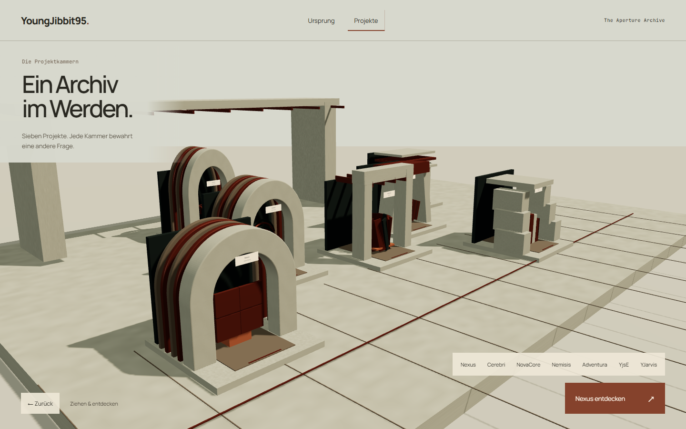
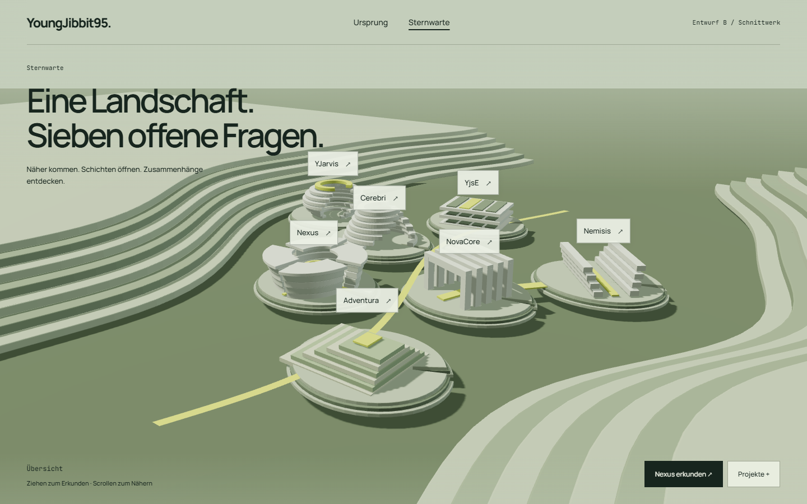
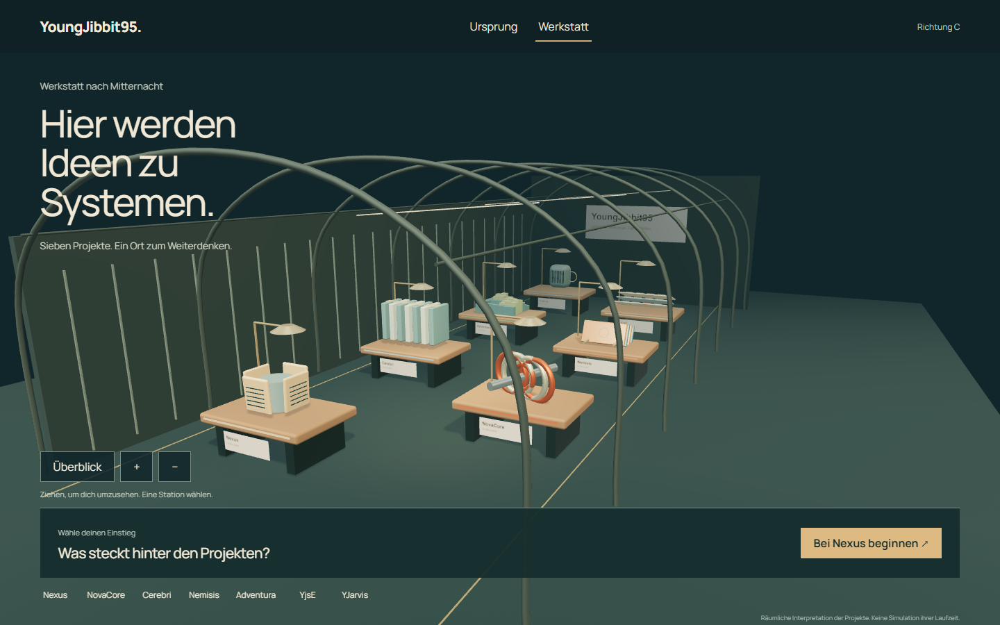

A / Kalkstein · Kupfer · Schwellen
The Aperture Archive
Ein monumentales Archiv: Projektkammern öffnen sich hinter gebauten Schwellen.

Echte Browseraufnahme · Anklicken für volle Auflösung
Stärke: Klare Schwellen, starke Perspektive und zusammengehörige
Origin-/Projektarchitektur.
Grenze: Kammern und Oberflächen wirken noch wie ein
Ausstellungsmodell; die persönliche Geschichte braucht mehr sichtbare Details.
B / Mineralschichten · Höfe · Gelber Weg
Schnittwerk
Eine helle Landschaft: Der Weg führt durch Einschnitte zu den inneren Schichten der
Projekte.

Echte Browseraufnahme · Anklicken für volle Auflösung
Stärke: Kohärenteste Gesamtlandschaft, gute Orientierung und eine
verständliche räumliche Öffnung.
Grenze: Noch Architekturmodell statt vollständig erlebter Landschaft;
Licht und Materialien brauchen mehr Eigenheit.
C / Dunkles Grün · Holz · Apparaturen
Werkstatt nach Mitternacht
Ein persönlicher Arbeitsort: Jedes Projekt wird zu einer eigenen, untersuchbaren
Apparatur.

Echte Browseraufnahme · Anklicken für volle Auflösung
Stärke: Persönlicher Maßstab, deutliche Objektidentitäten und warme
materielle Nähe.
Grenze: Werkbank-Reihung und Ausstellungseindruck; weniger
Monumentalität und derzeit höhere Renderkosten.